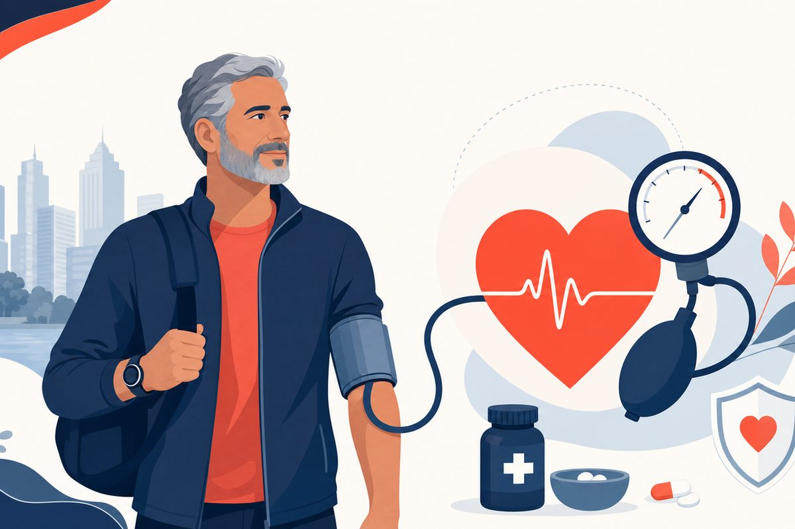

Key Takeaways
- High blood pressure does not by itself end a driving career: FMCSA's medical examiner handbook says hypertension alone is unlikely to interfere with safe driving, but your reading at the exam helps set how long you can be certified.[2]
- FMCSA certification by blood pressure: below 140/90, up to 2 years (at least yearly if you are treated for hypertension); 140/90 to 159/99, 1 year; 160/100 to 179/109, a one-time 3-month certificate; 180/110 or higher, no certification until it is 140/90 or less.[2][13]
- A blood pressure reading above 180/120 with symptoms (such as severe headache, chest pain, shortness of breath, vision changes, numbness or weakness, or difficulty speaking) is a hypertensive emergency: call 911 or get emergency care right away, not a telehealth visit.[9][10]
- Telehealth can refill existing BP medications and send prescriptions to any pharmacy in 40+ states where TeleDirectMD is licensed, solving the missed-refill problem mid-route.
- Americans eat about 3,400 mg of sodium a day on average, and over 70% of it comes from packaged and prepared foods; the AHA advises 2,300 mg a day or less, moving toward an ideal limit of less than 1,500 mg.[4][8]
- Amlodipine, lisinopril, losartan and chlorthalidone are each labeled for once-daily dosing for blood pressure, which can be easier to fit into a variable schedule than twice-daily regimens.[20][22][25][26]

Long-haul truck drivers carry a heavy burden of cardiovascular risk: in one survey of 316 long-haul drivers, 83.4% were overweight or obese and about 40% reported cardiovascular disease concerns.[3] In a national NIOSH survey of 1,670 long-haul drivers, obesity was about twice as common as in U.S. working adults (69% vs. 31%), while the share reporting a hypertension diagnosis (26.3%) was not different from working adults overall (24.1%).[14] Many of the same challenges apply to gig delivery workers, rideshare drivers, traveling sales representatives, and other mobile workers who spend the bulk of their careers behind a wheel or away from a fixed location.
Hypertension earns its nickname, "the silent killer," because for most people it has no signs or symptoms; measuring your blood pressure is the only way to find out you have it.[19] Most drivers with high blood pressure feel completely fine until a DOT physical reveals otherwise, or until something more serious happens. The challenge is not the diagnosis; it is keeping blood pressure controlled when your life is structured in ways that make chronic disease management genuinely difficult: irregular schedules, limited access to pharmacies and physicians, high-sodium food environments, stress, disrupted sleep, and long stretches of physical inactivity.
This guide covers what you need to know as a mobile worker: the DOT physical thresholds that affect your livelihood, practical strategies that work on the road, how telehealth solves the medication continuity problem, and the clear line between what can be safely managed remotely and what cannot.
Why Blood Pressure Matters Specifically for Drivers
For commercial drivers holding a CDL, blood pressure is not just a health issue; it is a regulatory one. Federal Motor Carrier Safety Administration (FMCSA) medical certification generally lasts at most 24 months, and the blood pressure measured at your exam helps decide how long your certificate is valid.[2][13]
| Blood Pressure Reading | Stage | DOT Certification Outcome |
|---|---|---|
| Below 140/90 mmHg | Below FMCSA Stages | May be certified for 2 years; at least yearly if you are being treated for hypertension |
| 140/90 to 159/99 mmHg | FMCSA Stage 1 | 1-year certificate; yearly exams after that, with blood pressure at or below 140/90 |
| 160/100 to 179/109 mmHg | FMCSA Stage 2 | One-time 3-month certificate to start or adjust treatment; then 1 year if blood pressure is 140/90 or less |
| 180/110 mmHg or higher | FMCSA Stage 3 | Not certified until blood pressure is 140/90 or less and treatment is well tolerated; then certified every 6 months |
FMCSA's stage names are not the same as the AHA/ACC blood pressure stages described later in this guide. The stakes are significant. A disqualification does not only affect income; it affects insurance, licensing status, and in many cases career trajectory. Drivers who bring documented evidence of treatment and blood pressure control to their next physical are in a much stronger position than those who arrive without a management record.
Beyond certification, FMCSA's handbook notes that Stage 3 blood pressure (180/110 or higher) carries a high risk for an acute blood pressure-related event, and that most blood pressure medicines can have side effects, such as sleepiness (somnolence) or fainting (syncope), that matter behind the wheel.[2] This is why FMCSA takes blood pressure thresholds seriously, and why managing hypertension is both a personal health priority and a professional one for CDL holders.
The Challenge: Managing a Chronic Condition Without a Regular Doctor
Standard medical advice for hypertension assumes a patient who is home most nights, within driving distance of a pharmacy, and capable of scheduling follow-up appointments two to three months out. For mobile workers, none of those assumptions hold.
Missed Refills Mid-Route
A driver who picks up a 90-day supply of lisinopril in Atlanta, then spends six weeks on the road through Texas, Oklahoma, and Colorado, may find themselves running out of medication in a state where their prescribing physician is not licensed. Many urgent care clinics are reluctant to refill ongoing medications they did not originally prescribe. The result: a gap in treatment, rising blood pressure, and a more difficult conversation at the next DOT physical.
Inconsistent Monitoring
Accurate blood pressure monitoring requires consistency: same time of day, rested state, proper cuff technique. Life on the road disrupts all of this. Many drivers do not own a cuff, or take readings immediately after a stressful haul, or in the cab in an awkward position, none of which produce reliable numbers.
Dietary Challenges at Truck Stops
The food environment at truck stops is not designed with blood pressure in mind. Processed sandwiches, canned soups, fast-food combos, and ready-to-eat snacks are calorie-dense and sodium-heavy. Deli meat sandwiches, pizza, soups and burgers are among the foods that supply the most sodium in the American diet, and over 70% of dietary sodium comes from packaged and prepared foods rather than the salt shaker.[4]
Stress and Sleep Disruption
Short sleep has been linked to higher blood pressure and hypertension in both cross-sectional and longitudinal studies, and experimental sleep restriction raises blood pressure.[5] Driving long hauls adds deadline pressure, traffic stress, irregular schedules, and sleeping in a cab that does not offer the same sleep quality as a home bed. Obstructive sleep apnea adds to the problem: an FMCSA-sponsored study found that almost one-third (28%) of commercial truck drivers have mild to severe sleep apnea,[15] and in a study of 125 patients with resistant hypertension, sleep apnea was the most common associated condition (64%).[6]
Blood Pressure Basics: Stages, Targets, and When Medication Is Needed
Blood pressure is measured in millimeters of mercury (mmHg) and expressed as two numbers. The top number (systolic) reflects the pressure when your heart contracts; the bottom number (diastolic) reflects the pressure when your heart rests between beats.
The 2025 AHA/ACC high blood pressure guideline retires and replaces the 2017 ACC/AHA guideline.[1] It defines hypertension in adults as 130/80 mmHg or higher and sets treatment by blood pressure level and cardiovascular risk.[7] The American Heart Association lists the categories as follows:[8]
| Category | Systolic | Diastolic | Typical Approach |
|---|---|---|---|
| Normal | Below 120 | Below 80 | Maintain healthy habits |
| Elevated | 120 to 129 | Below 80 | Lifestyle changes |
| Stage 1 | 130 to 139 | 80 to 89 | Lifestyle changes; medication now if you have cardiovascular disease, diabetes, chronic kidney disease or a 10-year PREVENT risk of 7.5% or higher, or if blood pressure stays at 130/80 or higher after 3 to 6 months of lifestyle changes |
| Stage 2 | 140 or higher | 90 or higher | Lifestyle changes plus medication, usually two medicines from different classes, ideally in one pill |
| Severe Hypertension | Higher than 180 | Higher than 120 | No symptoms: recheck and call your health care professional. Symptoms: call 911 (hypertensive emergency) |
Stage 1 and stage 2 apply if either number is in that range, and severe hypertension applies if either number is higher than 180/120.[8] The 2025 guideline goal for most adults is below 130/80 mmHg, with encouragement to reach a systolic pressure below 120 for people at higher cardiovascular risk.[7] FMCSA uses a different cutoff for certification: a driver below 140/90 may be certified for 2 years, but a driver being treated for hypertension should have at least an annual certification.[13] The clinical goal is lower than the FMCSA cutoff, so reaching it also leaves a margin at your exam.
Hypertensive Emergency: Go to the ER
A blood pressure reading above 180/120 mmHg, combined with any of the following, is a hypertensive emergency: severe or unusual headache, chest pain, shortness of breath, back pain, vision changes, confusion, numbness, weakness (including weakness on one side of the body), or difficulty speaking.[9][10] This requires immediate in-person emergency evaluation: call 911 or go to the nearest emergency room. Do not wait to see whether your blood pressure comes down on its own.[9] TeleDirectMD cannot manage hypertensive emergencies. If a reading is above 180/120 and you have no symptoms, wait at least 1 minute and take it again; if it is still that high, contact your health care professional as soon as possible.[9] When in doubt, seek in-person care.
Lifestyle Modifications That Work on the Road
Lifestyle changes lower blood pressure on their own. In a controlled feeding trial, the DASH eating pattern lowered systolic blood pressure by 11.4 mmHg more than a control diet with a fat content typical of the average U.S. diet, among people with hypertension,[16] and in a meta-analysis of trials, endurance exercise training lowered it by 8.3 mmHg in groups with hypertension.[17] Under the 2025 guideline, lifestyle changes stay part of treatment even when medication is started.[7] For mobile workers who are unable to see a physician frequently, lifestyle modifications are not optional extras; they are the most reliable tool available between visits.
Sodium-Conscious Eating at Truck Stops and Fast Food
The DASH diet (Dietary Approaches to Stop Hypertension), rich in fruits, vegetables and low-fat dairy foods and lower in saturated and total fat, lowered blood pressure in a controlled trial.[16] Its core principle for mobile workers translates to a practical rule: choose foods that are as close to their natural state as possible, and avoid anything labeled "seasoned," "marinated," "smoked," or "extra crispy."
- Lower-sodium options at most truck stops: Grilled chicken (not breaded), plain baked potato, side salads with dressing on the side, fruit cups, hard-boiled eggs, yogurt, unsalted mixed nuts
- High-sodium traps to limit: Soups and chili, processed meats (ham, salami, pepperoni), deli sandwiches, burgers and pizza (all among the top sodium sources in the U.S. diet[4]), most fast-food combos, pickles, most convenience store snacks
- At sit-down restaurants: Ask for sauces and dressings on the side and for your meal to be prepared without added salt;[4] order steamed or grilled rather than fried; skip the bread basket
Exercise During Stops
Aerobic (endurance) exercise is one of the most effective non-drug ways to lower blood pressure: in a meta-analysis of 93 trials, endurance training lowered systolic blood pressure by 8.3 mmHg in groups with hypertension, while dynamic resistance training lowered it by a smaller 1.8 mmHg across all participants.[17] You do not need a gym. During mandatory rest stops, brisk walking around the truck stop perimeter, a parking-lot jog, or bodyweight exercises (squats, push-ups, lunges) beside the cab all count.
Stress Management
Chronic stress activates the sympathetic nervous system, raising both heart rate and blood pressure. While you cannot eliminate the stressors of commercial driving, you can build in recovery time: deep-breathing exercises during rest breaks, audio-based mindfulness or meditation apps during non-driving time, and protecting sleep as a non-negotiable. The American Heart Association suggests stress-reducing activities, including meditation, breathing control and/or yoga, as part of managing blood pressure.[8]
Sleep Hygiene on the Road
Short sleep is associated with higher blood pressure, and insufficient sleep on a chronic basis can raise average 24-hour blood pressure.[5] For cab sleepers: blackout curtains for the sleeper berth, earplugs or white noise, and avoiding screens before sleep can help. If you snore heavily or wake unrefreshed consistently, discuss sleep apnea screening with a physician: loud snoring is a listed sign of sleep apnea,[15] and in one study sleep apnea was the most common condition linked with treatment-resistant hypertension.[6]
Limiting Caffeine and Energy Drinks
Caffeinated energy drinks raise blood pressure in the short term: in a meta-analysis of 15 studies, drinking an energy drink raised systolic blood pressure by an average of 4.44 mmHg and diastolic by 2.73 mmHg, with the largest rise (6.44 mmHg systolic) from drinks providing 200 mg or more of caffeine. The effect of regular long-term use is less clear.[18] For drivers relying on several energy drinks a day to stay alert, that can mean repeated short-term rises in blood pressure, so cutting back is worth discussing with your physician.
How Telehealth Enables Medication Continuity
The most common, preventable reason blood pressure spirals out of control in mobile workers is a simple one: running out of medication and having no practical way to get a refill. Hypertension medication refills are the most straightforward application of telehealth for this population, and they directly solve the geographic access problem.
Refills Sent to Any Pharmacy in 40+ States
TeleDirectMD is licensed to practice medicine in 40+ states. When you book a visit, the physician can send an electronic prescription to any pharmacy near your current location, whether you are in Tennessee, Texas, or Ohio. You are not tied to the pharmacy in your home city. This makes it possible to maintain uninterrupted treatment regardless of route.
The Same Physician, Regardless of Location
One of the challenges with urgent care and walk-in clinics is that each visit starts from scratch: a new provider who does not know your history, is unfamiliar with your current regimen, and may be reluctant to continue a medication they did not initiate. With TeleDirectMD, you see the same physician across visits, building a longitudinal record that captures your blood pressure trends, medication history, and response to prior adjustments. That record is also useful documentation for DOT physical examinations.
Medication Adjustments Without an Office Visit
If your blood pressure is not at goal on your current regimen, a telehealth visit allows your physician to adjust the dose, add a second agent, or switch to a different medication class, without requiring you to take time off the road to sit in a waiting room. For truck drivers on a tight delivery schedule, this flexibility is not a convenience; it is often the difference between getting care and deferring it indefinitely.
Lab Orders
TeleDirectMD can order lab work (basic metabolic panel, kidney function, electrolytes) through national lab networks like Quest Diagnostics or LabCorp, which have locations in or near most truck stops and highway corridors. This allows for routine monitoring of kidney function and electrolytes without requiring a visit to a primary care office; drug labels advise periodic potassium and kidney-function checks with ACE inhibitors and ARBs, and periodic electrolyte checks with thiazide-type diuretics.[20][22][26]
What TeleDirectMD Can and Cannot Do for Blood Pressure
Being clear about scope of practice is important. Telehealth is highly effective for stable, managed hypertension. It is not appropriate for acute crises or situations requiring physical examination or diagnostic equipment.
We CAN Help With
- Refilling existing antihypertensive medications
- Adjusting doses based on home readings you provide
- Adding a second medication if single-drug therapy is insufficient
- Ordering kidney function and electrolyte labs
- Counseling on DASH diet, sodium reduction, and lifestyle changes
- Providing documentation of treatment for DOT physical preparation
- Reviewing your blood pressure log and adjusting the plan accordingly
- Managing related conditions like diabetes and high cholesterol
We CANNOT Manage
- Hypertensive emergencies (BP >180/120 with symptoms): go to the ER
- Initiating new controlled substances
- Performing physical examinations, listening to heart and lung sounds
- Ordering or reading EKGs or echocardiograms
- Replacing your DOT medical examiner or completing DOT paperwork
- Diagnosing the cause of new chest pain or shortness of breath
- Managing heart failure or post-heart attack care
The Right Patient for Telehealth BP Management
Telehealth is best suited for patients who have an established hypertension diagnosis, are already on medication (or are being started on a first medication for Stage 1 hypertension), and are seeking continuity of care while traveling. If you have never been evaluated for hypertension, or if you have symptoms that might indicate secondary causes of hypertension (kidney disease, hormonal disorders), an in-person evaluation with appropriate testing should come first.
Blood Pressure Medications: What Works on the Road
The 2025 guideline lists four first-line medication classes: thiazide-type diuretics, long-acting dihydropyridine calcium channel blockers, ACE inhibitors and ARBs. For stage 2 hypertension, and for some higher-risk people with stage 1, it recommends starting two medicines from different classes, ideally combined in a single pill.[7] For mobile workers, medication selection should also consider dosing frequency and side effect profiles that interact with driving.
| Medication Class | Common Examples | Road-Friendly Notes |
|---|---|---|
| ACE Inhibitors | Lisinopril, Ramipril | Labeled for once-daily dosing;[20][21] cough is a known side effect (a reason to switch to an ARB)[20][21] |
| ARBs | Losartan, Olmesartan, Valsartan | Labeled for once-daily dosing;[22][23][24] in losartan studies of people who had cough on an ACE inhibitor, cough was about as common as with hydrochlorothiazide or placebo[22] |
| Calcium Channel Blockers | Amlodipine | Labeled for once-daily dosing; swelling (edema) is the most common side effect and is more frequent at higher doses[25] |
| Thiazide Diuretics | Chlorthalidone, HCTZ | Once-daily (the chlorthalidone label recommends a single morning dose with food); increases urination, so plan for bathroom access; periodic electrolyte checks[26][27] |
| Beta Blockers | Metoprolol succinate (extended release), Atenolol | Labeled for once-daily dosing; tiredness and dizziness are common side effects; do not stop suddenly;[28][29] not one of the four first-line classes for blood pressure alone[7] |
The practical principle for drivers: a medicine taken once a day, at the same time each day, is easier to fit around a variable schedule than one taken twice a day, and each medicine in the table above is labeled for once-daily use for blood pressure.[20][21][22][23][24][25][26][27][28][29] Generic versions of all five classes are widely available.
Frequently Asked Questions
Under FMCSA medical examiner guidance, a reading of 180/110 mmHg or higher at the physical means you should not be certified, even for a short period, until your blood pressure is 140/90 or less and treatment is well tolerated; after that, certification is every 6 months.[2] Readings from 160/100 to 179/109 allow a one-time 3-month certificate to start or adjust treatment, then 1 year if your blood pressure reaches 140/90 or less. Readings from 140/90 to 159/99 allow a 1-year certificate. Below 140/90, a driver may be certified for 2 years, but a driver being treated for hypertension should have at least an annual certification.[13] Borderline readings on the day of your exam can sometimes reflect white-coat hypertension, which is why having an established treatment record and home blood pressure log works in your favor when speaking with your medical examiner.
Yes. TeleDirectMD is licensed in 40+ states and can send electronic prescriptions to any pharmacy in those states. If you've run out of a medication mid-route, a telehealth visit allows a physician to review your history, confirm your current regimen, and send a refill to a pharmacy near your current location, without requiring you to return to your home state. Visits are a $79 flat fee and are available same-day, including evenings and weekends.
A hypertensive emergency is a blood pressure reading above 180/120 mmHg with symptoms that can signal organ damage, such as severe headache unlike any you've had before, vision changes, chest pain, shortness of breath, back pain, confusion, numbness or weakness, or difficulty speaking.[9][10] This requires immediate emergency care. Do not take extra doses of your medication or attempt to manage this with a telehealth visit. Call 911 or have someone drive you to the nearest emergency room immediately, and do not wait to see whether your blood pressure comes down on its own.[9] TeleDirectMD is not equipped to manage hypertensive emergencies and will always direct you to in-person emergency care in this situation.
Once-daily medications are usually easier to fit into a variable schedule than twice-daily regimens. Common options labeled for once-daily dosing include amlodipine (a calcium channel blocker), ACE inhibitors like lisinopril or ramipril, and ARBs like losartan or olmesartan.[20][21][22][23][25] Thiazide-type diuretics like chlorthalidone are also taken once a day but increase urination, so plan around bathroom access on long hauls.[26] A physician can review your specific situation and prioritize medications that are effective, well-tolerated, and affordable; generic versions of most first-line drugs are available.
The American Heart Association recommends an automatic, cuff-style, upper-arm monitor; wrist and finger monitors are not recommended because they give less reliable readings. Choose a validated monitor and measure at the same time every day.[11] If you take blood pressure medication, measure before you take it, and avoid caffeine, cigarettes and other stimulants for 30 minutes beforehand. Rest for five minutes in position first, with your back supported, feet flat on the floor, and the cuff on a bare upper arm at heart level.[12] Take two readings one minute apart and record the results.[11] Several days of logged home readings give a much more meaningful picture than any single reading, and the 2025 guideline recommends home monitoring to help adjust blood pressure medicines.[7]
Yes, with deliberate choices. Most truck stops now have restaurant chains or convenience sections with reasonable options. Lower-sodium choices include grilled proteins (avoid breaded or fried), plain baked potatoes, side salads with dressing on the side, yogurt, fruit cups, and unsalted nuts. Foods to limit: soups and chili, processed deli meats, burgers and pizza (all major sources of sodium in the U.S. diet), anything fried, and most convenience store snacks.[4] Reducing sodium is one of the most practical changes you can make for blood pressure. The average American eats about 3,400 mg of sodium a day;[4] the AHA advises 2,300 mg a day or less, moving toward an ideal limit of less than 1,500 mg.[8]
Keep Your Blood Pressure Managed, Wherever You Are
Same-day visits, evenings & weekends. Prescriptions sent to any pharmacy in 40+ states. Flat $79.
How to cite this guide
Bhavsar P. Managing High Blood Pressure When You're Always on the Move. TeleDirectMD Health Guides. Last reviewed April 2026. https://teledirectmd.com/health-guides/managing-blood-pressure-mobile-workers/
References
- Jones DW, Ferdinand KC, Taler SJ, et al. 2025 AHA/ACC/AANP/AAPA/ABC/ACCP/ACPM/AGS/AMA/ASPC/NMA/PCNA/SGIM Guideline for the Prevention, Detection, Evaluation and Management of High Blood Pressure in Adults: A Report of the American College of Cardiology/American Heart Association Joint Committee on Clinical Practice Guidelines. Hypertension. 2025;82(10):e212-e316. doi:10.1161/HYP.0000000000000249 https://pubmed.ncbi.nlm.nih.gov/40811516/
- Federal Motor Carrier Safety Administration. Medical Examiner's Handbook, 2024 Edition. U.S. Department of Transportation; January 2024. Accessed November 15, 2026. https://www.fmcsa.dot.gov/sites/fmcsa.dot.gov/files/2024-01/Medical%20Examiner's%20Handbook%202024%20Edition_0.pdf
- Apostolopoulos Y, Sönmez S, Shattell MM, Gonzales C, Fehrenbacher C. Health survey of U.S. long-haul truck drivers: work environment, physical health, and healthcare access. Work. 2013;46(1):113-123. doi:10.3233/WOR-121553 https://pubmed.ncbi.nlm.nih.gov/23324711/
- U.S. Food and Drug Administration. Sodium in Your Diet. Content current as of March 5, 2024. Accessed November 15, 2026. https://www.fda.gov/food/nutrition-education-resources-materials/sodium-your-diet
- Gangwisch JE. A review of evidence for the link between sleep duration and hypertension. Am J Hypertens. 2014;27(10):1235-1242. doi:10.1093/ajh/hpu071 https://pubmed.ncbi.nlm.nih.gov/24778107/
- Pedrosa RP, Drager LF, Gonzaga CC, et al. Obstructive sleep apnea: the most common secondary cause of hypertension associated with resistant hypertension. Hypertension. 2011;58(5):811-817. doi:10.1161/HYPERTENSIONAHA.111.179788 https://pubmed.ncbi.nlm.nih.gov/21968750/
- Cameron NA, Jones DW, Khan SS, Lloyd-Jones DM. Case-based applications of the 2025 AHA/ACC/multispecialty high blood pressure guideline. Hypertension. 2025;82(12):2055-2063. doi:10.1161/HYPERTENSIONAHA.125.25913 https://pmc.ncbi.nlm.nih.gov/articles/PMC12617343/
- American Heart Association. Top 10 Things to Know About the New AHA/ACC High Blood Pressure Guideline. Undated web page. Accessed November 15, 2026. https://www.heart.org/en/health-topics/high-blood-pressure/the-facts-about-high-blood-pressure/high-bp-top-10
- American Heart Association. When To Call 911 About High Blood Pressure. Undated web page. Accessed November 15, 2026. https://www.heart.org/en/health-topics/high-blood-pressure/understanding-blood-pressure-readings/when-to-call-911-for-high-blood-pressure
- MedlinePlus Medical Encyclopedia. Malignant hypertension. U.S. National Library of Medicine. Review date April 1, 2025. Accessed November 15, 2026. https://medlineplus.gov/ency/article/000491.htm
- American Heart Association. Monitoring Your Blood Pressure at Home. Undated web page. Accessed November 15, 2026. https://www.heart.org/en/health-topics/high-blood-pressure/understanding-blood-pressure-readings/monitoring-your-blood-pressure-at-home
- American Medical Association. How to Measure Your Blood Pressure at Home (patient handout, 2020). Accessed November 19, 2026. https://www.ama-assn.org/system/files/2020-05/measuring-bp-at-home.pdf
- Federal Motor Carrier Safety Administration. Section 391.41(b)(6): Driver Safety and Health, Medical Requirements (guidance Q&A on the hypertension standard). Issued April 1, 2014. Accessed November 15, 2026. https://www.fmcsa.dot.gov/regulations/medical/section-ss-39141b6-driver-safety-health-medical-requirements
- Sieber WK, Robinson CF, Birdsey J, et al. Obesity and other risk factors: the National Survey of U.S. Long-Haul Truck Driver Health and Injury. Am J Ind Med. 2014;57(6):615-626. doi:10.1002/ajim.22293 https://pmc.ncbi.nlm.nih.gov/articles/PMC4511102/
- Federal Motor Carrier Safety Administration. Driving When You Have Sleep Apnea. Last updated February 19, 2014. Accessed November 15, 2026. https://www.fmcsa.dot.gov/driver-safety/sleep-apnea/driving-when-you-have-sleep-apnea
- Appel LJ, Moore TJ, Obarzanek E, et al. A clinical trial of the effects of dietary patterns on blood pressure. DASH Collaborative Research Group. N Engl J Med. 1997;336(16):1117-1124. doi:10.1056/NEJM199704173361601 https://pubmed.ncbi.nlm.nih.gov/9099655/
- Cornelissen VA, Smart NA. Exercise training for blood pressure: a systematic review and meta-analysis. J Am Heart Assoc. 2013;2(1):e004473. doi:10.1161/JAHA.112.004473 https://pubmed.ncbi.nlm.nih.gov/23525435/
- Shah SA, Chu BW, Lacey CS, et al. Impact of acute energy drink consumption on blood pressure parameters: a meta-analysis. Ann Pharmacother. 2016;50(10):808-815. doi:10.1177/1060028016656433 https://pubmed.ncbi.nlm.nih.gov/27340146/
- American Heart Association. What are the Signs and Symptoms of High Blood Pressure? Undated web page. Accessed November 15, 2026. https://www.heart.org/en/health-topics/high-blood-pressure/know-your-risk-factors-for-high-blood-pressure/what-are-the-symptoms-of-high-blood-pressure
- DailyMed. Lisinopril tablets (Lupin Pharmaceuticals). Prescribing information, revised October 2025. U.S. National Library of Medicine. Accessed November 15, 2026. https://dailymed.nlm.nih.gov/dailymed/drugInfo.cfm?setid=7d6c31e2-b5a4-4279-8013-a8dad37ea73b
- DailyMed. Ramipril capsules (Aurobindo Pharma). Prescribing information, DailyMed update July 1, 2026. U.S. National Library of Medicine. Accessed November 15, 2026. https://dailymed.nlm.nih.gov/dailymed/drugInfo.cfm?setid=d6d57158-e8f9-4c91-8317-0374e0c87d33
- DailyMed. Losartan potassium tablets (Camber Pharmaceuticals). Prescribing information, revised August 2025. U.S. National Library of Medicine. Accessed November 15, 2026. https://dailymed.nlm.nih.gov/dailymed/drugInfo.cfm?setid=cafd54e8-42a8-474c-8ea8-49ec74c2b0d3
- DailyMed. Olmesartan medoxomil tablets (Macleods Pharmaceuticals). Prescribing information, DailyMed update September 10, 2025. U.S. National Library of Medicine. Accessed November 15, 2026. https://dailymed.nlm.nih.gov/dailymed/drugInfo.cfm?setid=24e308cc-7cec-4054-9627-66f743ed71b0
- DailyMed. Valsartan tablets (Direct_Rx, repackaged). Prescribing information, DailyMed update January 27, 2025. U.S. National Library of Medicine. Accessed November 15, 2026. https://dailymed.nlm.nih.gov/dailymed/lookup.cfm?setid=946692f5-0fe2-89b7-e053-2995a90a4d91
- DailyMed. Amlodipine besylate tablets (Bi-Coastal Pharma International). Prescribing information, revised January 2019. U.S. National Library of Medicine. Accessed November 15, 2026. https://dailymed.nlm.nih.gov/dailymed/drugInfo.cfm?setid=705d4471-b1bc-49a7-a871-9c03f886b69e
- DailyMed. Chlorthalidone tablets (Mylan Pharmaceuticals). Prescribing information, revised April 2026. U.S. National Library of Medicine. Accessed November 15, 2026. https://dailymed.nlm.nih.gov/dailymed/drugInfo.cfm?setid=15dd224a-87ad-48dc-80b1-e8382a452c4c
- DailyMed. Hydrochlorothiazide tablets (American Health Packaging, repackaged). Prescribing information, DailyMed update April 7, 2026. U.S. National Library of Medicine. Accessed November 15, 2026. https://dailymed.nlm.nih.gov/dailymed/lookup.cfm?setid=c8de63da-b6c0-42f0-9d47-e273fe93adb3
- DailyMed. Metoprolol succinate extended-release tablets (Cardinal Health 107). Prescribing information, revised July 2025. U.S. National Library of Medicine. Accessed November 15, 2026. https://dailymed.nlm.nih.gov/dailymed/drugInfo.cfm?setid=450fb603-73d7-422b-a4e2-5a05c13ebe3b
- DailyMed. Atenolol tablets (Rising Pharma Holdings). Prescribing information, revised May 2025. U.S. National Library of Medicine. Accessed November 15, 2026. https://dailymed.nlm.nih.gov/dailymed/drugInfo.cfm?setid=96dd038f-b363-4e24-9c67-82b7c85c3bc4